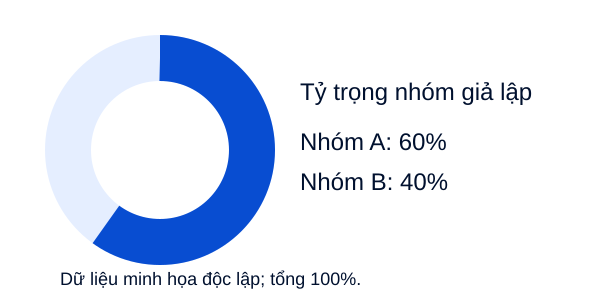

LONG THÀNH / MẪU THIẾT KẾ ĐỀ XUẤT
Phạm vi mẫu: hai nhóm giả lập trong tài liệu minh họa; không ước tính quy mô thị trường.

Tỷ trọng mẫu độc lập; không phải dữ liệu thị trường.2 nhóm
24 việc mẫu
0 kết luận thị trường
| Nhóm mẫu | Động lực cần nghiên cứu |
|---|
| A · Lưu trữ | Hiệu quả không gian |
| B · Phân nhóm | Dễ nhận biết |